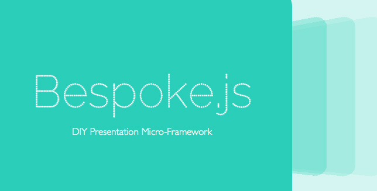

Cómo hacer presentaciones geniales con HTML, CSS y Javascript
Algo sobre mí ...
Soy flojo
Me gusta Programar
Odio las aplicaciones de ofimática
Por mi trabajo ... debo realizar presentaciones frecuentemente
Qué puedo hacer?
The Partners for Laziness



El día de hoy vamos crear esta misma presentación
Se lo que están pensando
Si creamos una presentación que crea la misma presentación que crea la misma presentación...
Vamos a hacer un loop infinito
Afortunadamente ... Sabemos como lidiar con loops infinitos
Pre-requisitos y Presentación Base
sudo npm install -g yo
sudo npm install -g yo generator-bespoke
git clone ....
cd medellinjs-presentaciones-con-javascript-lite
yo bespoke
sudo npm install
grunt server
cd src
mkdir img
Márgenes de la Presentación - Opcional
slide_width = 100%
slide_height = 100%
.bespoke-slide
top: 0
margin-top: 0
left: 0
margin-left: 0
Mi primera diapositiva
index.jade
section.green
h1 Cómo hacer presentaciones geniales con HTML, CSS y Javascript
main.styl
section.green
background-color: #52ED8D
Creando los otros estilos base
section.violet
background-color: #7914CC
color: white
section.magenta
background-color: #DD40FF
section.white
background-color: white
Diapositiva con fondo de imagen, enlace y un cuadro de texto - Jade
index.jade
section.solido
.tint
h1 Jaime Andrés García
h2 CEO - Ingenio Sólido
a(href='http://www.ingeniosolido.com') http://www.ingeniosolido.com
a(href='http://twitter.com/JaimeAGarciaM') @JaimeAGarciaM
Diapositiva con fondo de imagen, enlace y un cuadro de texto - Stylus
main.styl
section.solido
background-image url(../img/fondo-isolido.png);
background-size cover
a
font-size: 40px
.tint
background: rgba(0,0,0,0.7)
padding: 30px
color: white
Diapositiva con fondo gif
index.jade
section.lazy
.tint
h1 Soy flojomain.styl
section.lazy
background-image url(../img/lazy.gif);
background-size cover
Creando las otras diapositivas con fondo gif - Jade
index.jade
section.love
.tint
h1 Me gusta programar
section.hate
.tint
h1 Odio las aplicaciones de ofimática
section.violet
h1 Por mi trabajo ... debo realizar presentaciones frecuentamente
section.how
.tint
h1 Qué puedo hacer?
Creando las otras diapositivas con fondo gif - Stylus
main.styl
section.hate
background-image url(../img/hate.gif);
background-size cover
section.love
background-image url(../img/love-programming.gif);
background-size cover
section.how
background-image url(../img/how.gif);
background-size cover
Diapositiva con imágenes
section.white
h1 The Partners for Laziness
.lazy-partners
img(src="img/bespoke-logo.png")
img(src="img/yeoman-logo.png")
img(src="img/grunt-logo.png")
br
img(src="img/jade-logo.png")
img(src="img/stylus-logo.png")
Diapositiva con código
section
h2 Pre-requisitos y Presentación Base
code.language-bash
pre.
sudo npm install -g yo
sudo npm install -g yo generator-bespoke
git clone ....
cd medellinjs-presentaciones-con-javascript
yo bespoke
sudo npm install
grunt server
cd src
mkdir img
Otra diapositiva con código
section
h2 Márgenes de la Presentación - Opcional
code.language-css
pre.
slide_width = 100%
slide_height = 100%
.bespoke-slide
top: 0
margin-top: 0
left: 0
margin-left: 0
Agregando diapositiva con gráfica interactiva
Instalando y Agregando las librerías de D3
bower install nvd3
index.jade
link(rel='stylesheet', type='text/css', href='bower_components/nvd3/nv.d3.css')
script(src='bower_components/d3/d3.min.js')
script(src='bower_components/nvd3/nv.d3.min.js')
Agregando gráfica
index.jade
section.white
h2 Agregando diapositiva con gráfica interactiva
div#chart
svg(style="height:400px;width:700px")
script(src='scripts/linechart.js')
Así de fácil
Sólo falta que digas que también le puedes agregar campo de búsqueda a la presentación
Así es
Gracias a los plugins de bespoke
Agregando bespoke-spotlight - Jade
index.jade
link(rel='stylesheet', type='text/css', href='styles/bespoke-spotlight.css')
script(src='scripts/bespoke-spotlight.min.js')
Agregando bespoke-spotlight - Javascript
main.js
Simplemente se agrega spotlight: true
bespoke.horizontal.from('article', {
bullets: 'li, .bullet',
scale: true,
hash: true,
progress: true,
state: true,
spotlight: true
});
Ahora publiquemos nuestra presentación en Github Pages
Primero hacemos add, commit y push a nuestro repositorio y luego simplemente
grunt deploy